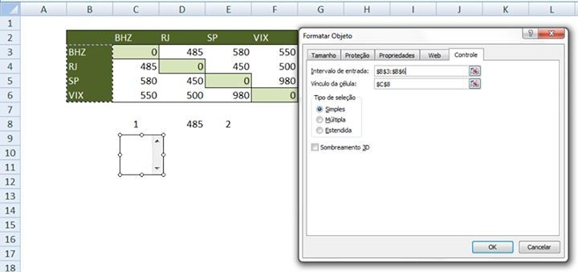
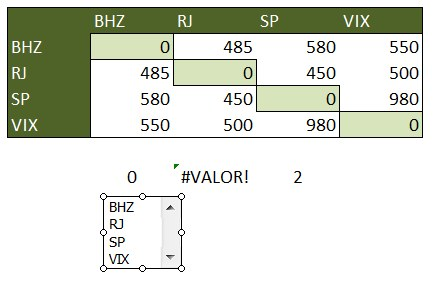
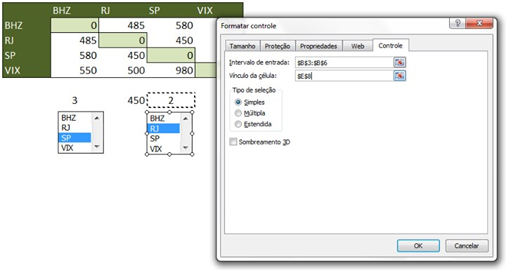

No capítulo sobre a função ÍNDICE terminamos com uma pergunta de segurança: como impedir que o usuário digite um número de linha inválido ou a sigla de uma cidade onde se espera um número? Uma das respostas são os controles de formulário, objetos com o jeito das interfaces do Windows que já conhecemos, como as caixas que aparecem quando clicamos em salvar um arquivo.
Baixe a planilha do exercício: modelo-excel-controles-de-formularios.xlsx. Ela traz os exemplos deste capítulo com as fórmulas funcionando: altere os valores azuis e veja o resultado. A planilha traz a escolha de cidades por lista suspensa, com a célula de índice visível e o passo a passo para desenhar a caixa de listagem de verdade na guia Desenvolvedor.
O que são e por que usar
Os controles de formulário podem ser inseridos na planilha e trazem riqueza visual e mais qualidade, porque engessam a mão do usuário e previnem o mau uso. Aqui vamos aperfeiçoar a planilha de distâncias entre cidades trocando a digitação de números por uma caixa de listagem para escolher a cidade.
Desenhando a caixa de listagem
Com o controle escolhido na guia Desenvolvedor, desenhamos um retângulo logo abaixo da célula da cidade de origem, com tamanho parecido com o de uma foto 3x4. Em seguida, com o botão direito, usamos FORMATAR CONTROLE e definimos duas propriedades importantes.
- O INTERVALO DE ENTRADA, que são os itens que preenchem a lista, aceita apenas intervalos na vertical, na mesma coluna. No exemplo usamos B3:B6, as quatro cidades.
- O VÍNCULO DA CÉLULA guarda o índice do item escolhido, a única forma, via fórmula, de saber qual está selecionado. Escolher BHZ grava 1 na célula vinculada, RJ grava 2, SP grava 3 e VIX grava 4.

Logo que a caixa é inserida, nada está selecionado e o valor é zero. Como não existe a linha zero na matriz, a função ÍNDICE devolve o erro #VALOR!, que desaparece assim que clicamos em qualquer cidade.

Fechando o exercício
Repetimos o processo para a cidade de destino, lembrando que o intervalo de entrada precisa ser vertical e por fim posicionamos as caixas por cima das células vinculadas. Esse artifício oculta os índices, deixando a planilha mais limpa e segura, porque se as células estiverem visíveis o usuário, como num passe de mágica, vai tentar alterá-las diretamente.

Este capítulo explora só a caixa de listagem, um dos muitos controles do Excel. Como dica de estudo, tente trocar a caixa de listagem pela caixa de combinação no mesmo exercício e veja que também fica muito interessante.